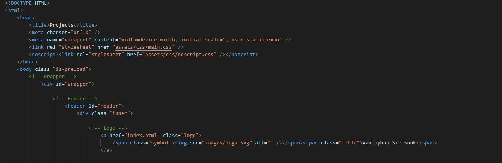

BEGINNING MY PORTFOLIO - 5/9/2020

Context
Today is 5/9/2020, during this time a majority of new graduates and college students have found themselves in a deficit of internships and jobs cuased by COVID-19. I, myself, found that many of the opportunities left for underclassmen like me were being rescinded due to safety concerns. Those that weren't rescinded now have a more competitive job pool due to upperclassmen who've unfortunately had their own internships rescinded as well. These conditions have all culminated together to produce a rather optimal situation for producing personal projects. I already planned to create this portfolio during my summer between freshman and sophmore year but, the conditions of self-quarintine and extended amounts of available times have encouraged me to become more productive this summer. Scrolling down twitter after one of my finals, I found a group called:
A collective of college students without a internship mentored by Phil Liao, Summer of Shipping aims to provide students with as desirable of a resume as possible compared to those who are fortunate enough to have internships in preparation for next interview season. I have joined this group in an attempt to have a more productive environment and have accountibility to keep myself working with the help of others. With a new productive and positive environment, I began developing my first project right after my finals. That first project was my website.
Development of My Portfolio
The first issue of my portfolio was to find out what design was needed for my website. I needed at least one page to showcase my projects with each project having an entire page dedicated to itself, one page for information regarding my resume, one page for a blog, and an introductory page. Therefore, I divided the website into 4 main categories: Home Page, Projects, Resume Information, and This Blog. There were only two questions: How would the user navigate between pages? How would I store in a relatively compact and efficient method? both of these questions would have to be solved with tools in an effective and aesthetically pleasing way. This mean't I could not simply make poorly styled buttons at the top and bottom of each page. While searching around these two helpful sources:
I had found the solution to my issue. On HTML5Up, I found a free boiler plate for the basis for my css styling and html. It contained a navigation menu which was one of the solution I had thought of as they have become more present as of recently. It also contained interactive tile which could hold links to different pages or links to other websites, allowing me to showcase and organize projects and blogs in an effective and visually pleasing matter. Then, I searched coolors.co for trending and popular color palletes, where I found the general color palette for this website. I then customized the boiler plate with new color palattes and structuring with new fronts through google font api. All of these elements were then put together over the course of several hours to present you with the website you see right now.
Plans For Recognizer
Project recognizer is face identifying and tracking software which runs within a web page. My plans is to utilize a public module which is built upon tenserflow.js called:
Utilizing this module, I will attempt to build this software into the Recognizer tile on the page tab. As soon as notable development with Project recognizer is achieved, updates on development will be published